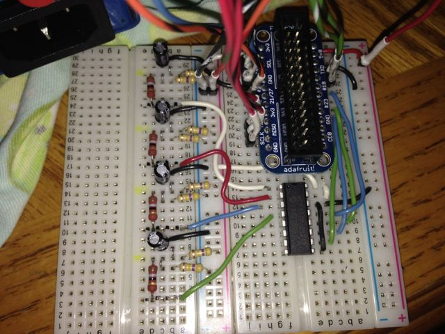
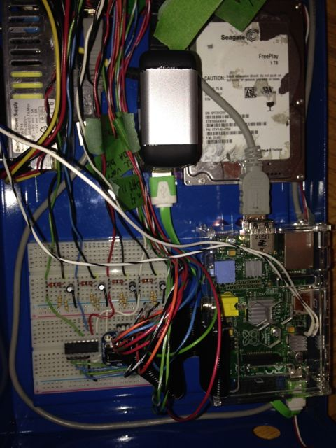
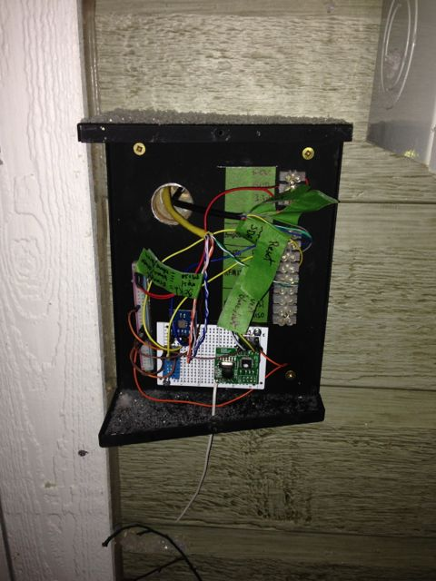

hello guy's
i'm new to energy monitoring
I bought 3 emontx v.2 and rfm12pi and it works really well, thank you!
I am currently studying the possibility of expanding my system and use the raspberry pi for reading additional 4 ct with analog to digital converter (MCP3008) and a python script but the knowledge that I have in programming are intermediate level and I need to adapt the calcIrms of emonlib in my python script
if someone could take a look and give me ideas
this is a arduino emonlib
double EnergyMonitor::calcIrms(int NUMBER_OF_SAMPLES)
{
#if defined emonTxV3
int SUPPLYVOLTAGE=3300;
#else
int SUPPLYVOLTAGE = readVcc();
#endif
for (int n = 0; n < NUMBER_OF_SAMPLES; n++)
{
lastSampleI = sampleI;
sampleI = analogRead(inPinI);
lastFilteredI = filteredI;
filteredI = 0.996*(lastFilteredI+sampleI-lastSampleI);// Root-mean-square method current
// 1) square current values
sqI = filteredI * filteredI;
// 2) sum
sumI += sqI;
}double I_RATIO = ICAL *((SUPPLYVOLTAGE/1000.0) / 1023.0);
Irms = I_RATIO * sqrt(sumI / NUMBER_OF_SAMPLES);//Reset accumulators
sumI = 0;
//--------------------------------------------------------------------------------------return Irms;
}
and this is a part of my python script
SPICLK = 18
SPIMISO = 23
SPIMOSI = 24
SPICS = 25# set up the SPI interface pins
GPIO.setup(SPIMOSI, GPIO.OUT)
GPIO.setup(SPIMISO, GPIO.IN)
GPIO.setup(SPICLK, GPIO.OUT)
GPIO.setup(SPICS, GPIO.OUT)# mcp3008 input
votage_Supply = 0;
ct1_adc = 1;
ct2_adc = 2;
ct3_adc = 3;
ct4_adc = 4;# read the analog pin
ct1 = readadc(ct1_adc, SPICLK, SPIMOSI, SPIMISO, SPICS)
if someone could take a look and give me ideas
Re: Raspberry pi ,mcp3008, and python script substitue to emontx ?
Thats a nice idea! without knowing much about your exact setup would just adapting the calcIrms code like this work:
import math
SPICLK = 18
SPIMISO = 23
SPIMOSI = 24
SPICS = 25
# set up the SPI interface pins
GPIO.setup(SPIMOSI, GPIO.OUT)
GPIO.setup(SPIMISO, GPIO.IN)
GPIO.setup(SPICLK, GPIO.OUT)
GPIO.setup(SPICS, GPIO.OUT)
# mcp3008 input
votage_Supply = 0;
ct1_adc = 1;
ct2_adc = 2;
ct3_adc = 3;
ct4_adc = 4;
NUMBER_OF_SAMPLES = 1000
SUPPLYVOLTAGE = 3300
ICAL = 111.1
sumI = 0
sampleI = 512
filteredI = 0
for n in range (0, NUMBER_OF_SAMPLES):
lastSampleI = sampleI
# read the analog pin
sampleI = readadc(ct1_adc, SPICLK, SPIMOSI, SPIMISO, SPICS)
lastFilteredI = filteredI
filteredI = 0.996*(lastFilteredI+sampleI-lastSampleI)
sqI = filteredI * filteredI
sumI += sqI
I_RATIO = ICAL * ((SUPPLYVOLTAGE/1000.0) / 1023.0)
Irms = I_RATIO * math.sqrt(sumI / NUMBER_OF_SAMPLES)
sumI = 0
print Irms
Re: Raspberry pi ,mcp3008, and python script substitue to emontx ?
Thanks you very much !!! :-)
Re: Raspberry pi ,mcp3008, and python script substitue to emontx ?
This is my final working python script for energy monitoring direct on the raspberry pi with the mcp3008
#!/usr/bin/env python
# just some bitbang code for testing all 8 channels
import math
import RPi.GPIO as GPIO, time, os
import urllib2
import time
apike = "yourapikey"
emoncmspath = "127.0.0.1/emoncms"
interval = 20 # 20 sec
DEBUG = 1
GPIO.setmode(GPIO.BCM)
GPIO.setwarnings(False)
# this function is not used, its for future reference!
def slowspiwrite(clockpin, datapin, byteout):
GPIO.setup(clockpin, GPIO.OUT)
GPIO.setup(datapin, GPIO.OUT)
for i in range(8):
if (byteout & 0x80):
GPIO.output(datapin, True)
else:
GPIO.output(datapin, False)
byteout <<= 1
GPIO.output(clockpin, True)
GPIO.output(clockpin, False)
# this function is not used, its for future reference!
def slowspiread(clockpin, datapin):
GPIO.setup(clockpin, GPIO.OUT)
GPIO.setup(datapin, GPIO.IN)
byteout = 0
for i in range(8):
GPIO.output(clockpin, False)
GPIO.output(clockpin, True)
byteout <<= 1
if (GPIO.input(datapin)):
byteout = byteout | 0x1
return byteout
# read SPI data from MCP3008 chip, 8 possible adc's (0 thru 7)
def readadc(adcnum, clockpin, mosipin, misopin, cspin):
if ((adcnum > 7) or (adcnum < 0)):
return -1
GPIO.output(cspin, True)
GPIO.output(clockpin, False) # start clock low
GPIO.output(cspin, False) # bring CS low
commandout = adcnum
commandout |= 0x18 # start bit + single-ended bit
commandout <<= 3 # we only need to send 5 bits here
for i in range(5):
if (commandout & 0x80):
GPIO.output(mosipin, True)
else:
GPIO.output(mosipin, False)
commandout <<= 1
GPIO.output(clockpin, True)
GPIO.output(clockpin, False)
adcout = 0
# read in one empty bit, one null bit and 10 ADC bits
for i in range(12):
GPIO.output(clockpin, True)
GPIO.output(clockpin, False)
adcout <<= 1
if (GPIO.input(misopin)):
adcout |= 0x1
GPIO.output(cspin, True)
adcout /= 2 # first bit is 'null' so drop it
return adcout
# change these as desired
SPICLK = 18
SPIMISO = 23
SPIMOSI = 24
SPICS = 25
# set up the SPI interface pins
GPIO.setup(SPIMOSI, GPIO.OUT)
GPIO.setup(SPIMISO, GPIO.IN)
GPIO.setup(SPICLK, GPIO.OUT)
GPIO.setup(SPICS, GPIO.OUT)
# Note that bitbanging SPI is incredibly slow on the Pi as its not
# a RTOS - reading the ADC takes about 30 ms (~30 samples per second)
# which is awful for a microcontroller but better-than-nothing for Linux
#RMS calcule fonction
def CalcIrms(cts):
NUMBER_OF_SAMPLES = 1000
SUPPLYVOLTAGE = 3300
ICAL = 111.1
sumI = 0
sampleI = 512
filteredI = 0
for n in range (0, NUMBER_OF_SAMPLES):
lastSampleI = sampleI
sampleI = readadc(cts, SPICLK, SPIMOSI, SPIMISO, SPICS)
#print sampleI
lastFilteredI = filteredI
filteredI = 0.996*(lastFilteredI+sampleI-lastSampleI)
sqI = filteredI * filteredI
sumI += sqI
I_RATIO = ICAL * ((SUPPLYVOLTAGE/1000.0) / 1023.0)
Irms = I_RATIO * math.sqrt(sumI / NUMBER_OF_SAMPLES)
sumI = 0
return Irms
# mcp3008 input
ct1_adc = 0
ct2_adc = 1
ct3_adc = 2
ct4_adc = 3
# Convert the reading value in RMS
# ct1 and ct2 monitor my 2 pole 240v main power
while True:
ct1 = CalcIrms(ct1_adc)*120 #ct1 and ct2 are added by emoncms
ct2 = CalcIrms(ct2_adc)*120
ct3 = CalcIrms(ct3_adc)*240
ct4 = CalcIrms(ct4_adc)*240
#print "ct1: %.2f watt" % ct1
#print "ct2: %.2f watt" % ct2
#print "ct3: %.2f watt" % ct3
#print "ct4: %.2f watt" % ct4
urllib2.urlopen("http://"+emoncmspath+"/input/post.json?node=8&csv="+str(ct1)+","+str(ct2)+","+str(ct3)+","+str(ct4)+ "&apikey=" + apike)
time.sleep(interval)
Re: Raspberry pi ,mcp3008, and python script substitue to emontx ?
some pic of my system
breadboard

Raspberry pi case

Outside module connected to raspberry pi

the raspberry pi are in my garage because the distribution board is in, and my interior finish is metal sheet , for this reason i put the rfm12pi outside with the sensors
the mcp3008 measure main power and 2 complete circuit
and i have 3 emontx inside home
Re: Raspberry pi ,mcp3008, and python script substitue to emontx ?
@jmg22 Thank you very much for sharing. I actually want to do this as well but connecting a CT Sensor to the MCP3008. Do you have a circuit diagram?
Re: Raspberry pi ,mcp3008, and python script substitue to emontx ?
Sampling with a rate as low as that is nearly useless for correct RMS calculations. If 'undersampling' is unavoidable than the sampling periode has to be exact and in an absolutely fixed relation to the signal frequency. This has been discussed a lot of times already.
And I would use an MCP3208 as the added two bits in resolution do not cost a fortune.
BR, Jörg.
Re: Raspberry pi ,mcp3008, and python script substitue to emontx ?
Hi can you post your circuit? I have some problems to understand how it work!
how i cal calc i icall value (111.1)?
regards Paolo
Re: Raspberry pi ,mcp3008, and python script substitue to emontx ?
How the calibration values are calculated is all in Building Blocks.
Re: Raspberry pi ,mcp3008, and python script substitue to emontx ?
Do you have the circuit diagram? Ragards paolo